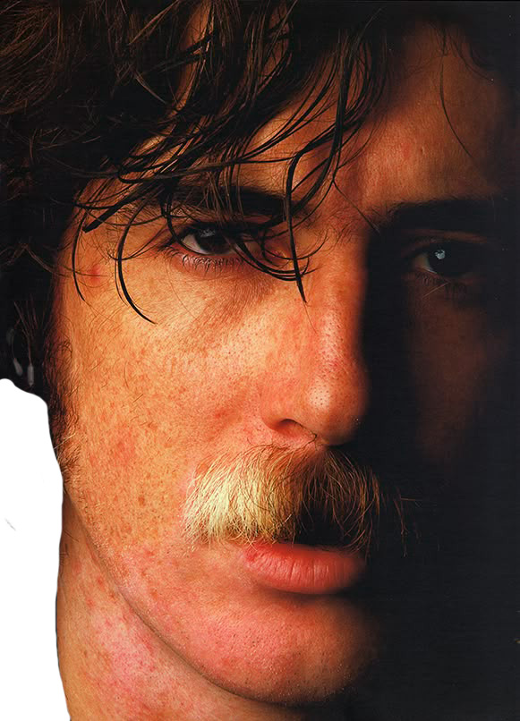

SAY NO MORE

En los años noventa, Charly se volvió su propio experimento. Say No More no fue solo un disco: fue una declaración. Con ruido, ironía y fragmentos caóticos, creó un nuevo lenguaje. El arte de Say No More no es silencio: es la música de lo que no se puede decir.
“Say No More no es silencio: es la música de lo que no se puede decir.”
Charly en esta época rompió las estructuras. Improvisaba, mezclaba y grababa sin miedo al error. Cada acorde parecía un reflejo de su mente inquieta. Say No More representó la caída y la reinvención: el caos en belleza.
El título no era solo un disco: era una filosofía. “Say No More” —“no digas más”— se convirtió en un código, una consigna personal y artística. Charly ya no quería explicar nada: quería sentirlo todo. El álbum, grabado con absoluta libertad, mezcla grabaciones caseras, improvisaciones y fragmentos de distintas épocas. No sigue una estructura tradicional: es una obra rota, cruda y emocional, donde cada canción es una pieza de su mente.
En ese caos hay belleza: “Estaba en llamas cuando me acosté”, “Los dinosaurios”, “Cuchillos”, “Chipi Chipi”. Todas respiran un mismo aire: el de la supervivencia. Durante estos años, Charly se transformó en un personaje excéntrico, impredecible, genial y peligroso. Su figura pública se volvió tan intensa como su música. El símbolo “SNM” empezó a aparecer en paredes, discos y ropa, como una marca secreta entre los que aún creían en su magia.
BIOGRAFÍA
Charly García nació en Buenos Aires el 23 de octubre de 1951. Desde niño mostró un oído absoluto y una sensibilidad musical extraordinaria. A los cinco años ya tocaba piano, y a los doce componía sus primeras melodías. En la adolescencia descubrió el rock y comenzó a mezclar la formación clásica con la rebeldía eléctrica.
A fines de los años sesenta formó su primer grupo, To Walk Spanish, pero fue con Sui Generis, junto a Nito Mestre, que alcanzó la fama. Con canciones honestas y melancólicas, el dúo marcó a toda una generación. Tras la separación de Sui Generis en 1975, Charly buscó un sonido más complejo y experimental con La Máquina de Hacer Pájaros. Aunque el público no la comprendió del todo, esa etapa se convirtió en una pieza fundamental para entender su evolución.
En 1978 fundó Serú Girán, junto a David Lebón, Pedro Aznar y Oscar Moro. La banda fue considerada “los Beatles argentinos” por su virtuosismo y su capacidad para representar el espíritu de una época difícil. Sus discos “La grasa de las capitales” y “Bicicleta” siguen siendo clásicos del rock nacional.
Con la llegada de la democracia, Charly inició su carrera solista. Obras como “Clics modernos” (1983) y “Piano Bar” (1984) redefinieron el sonido del pop y el rock en español, incorporando sintetizadores, ironía y una mirada urbana. Durante los años noventa, su estilo se volvió más libre, caótico y provocador. Nació así la etapa “Say No More”, un manifiesto de arte y descontrol donde rompió todas las reglas, tanto musicales como personales.
“Charly es el artista que convirtió la contradicción en estilo.”
A pesar de los excesos, las caídas y los silencios, Charly siempre regresó. Su figura se transformó en mito, y su música, en memoria colectiva.
AGRADECIMIENTOS
La presente publicación se realizó como ejercicio académico dentro del área de Técnica Digital de la Universidad Pontificia Bolivariana. Agradezco a los docentes por su orientación y acompañamiento durante el proceso de investigación y diseño, así como a las fuentes y archivos culturales que contribuyen a mantener vivo el legado de Charly García y del rock argentino. Este proyecto busca rendir homenaje a una figura esencial de la música latinoamericana y explorar, desde el diseño editorial, la relación entre imagen, sonido y memoria. Finalmente, dedico este trabajo a quienes siguen creyendo en la creatividad como una forma de libertad.